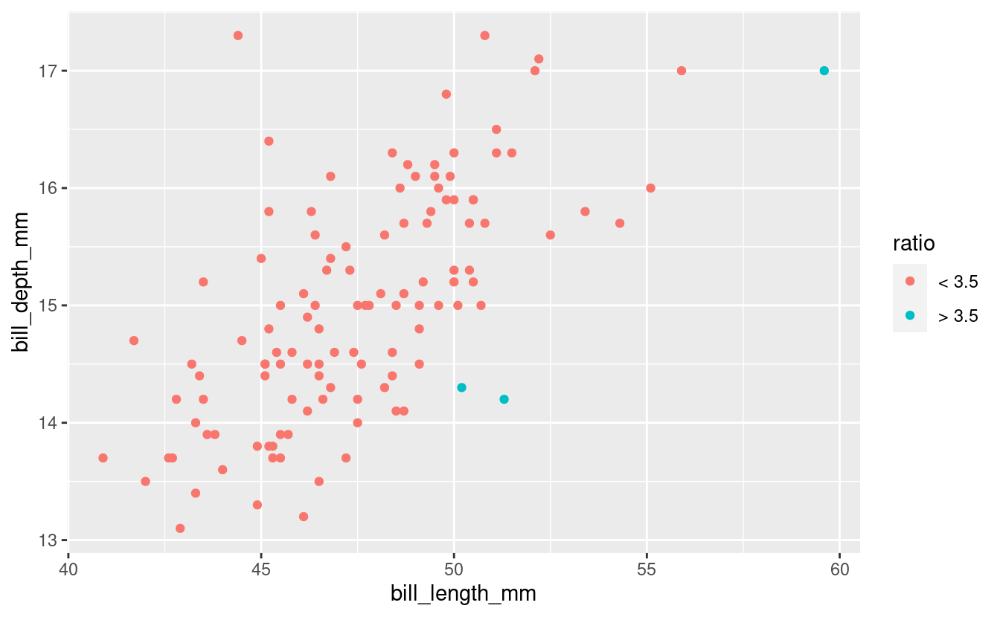
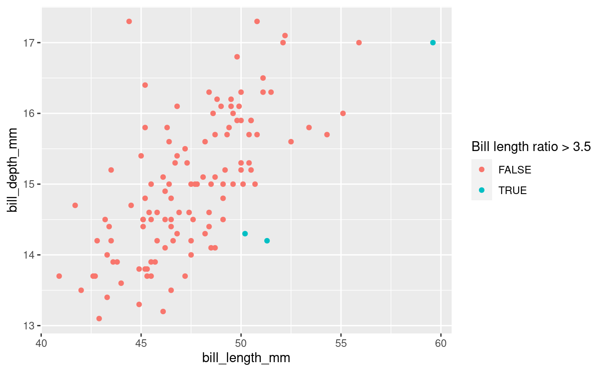

S03E07: Avoid Copy-pasting Code - Intro and Vectorization
How to repeat operations without repeating your code
Housekeeping
New to Code Club?
Check out the Code Club Computer Setup instructions, which also has pointers for if you’re new to R or RStudio.
Session goals
Today, you will learn:
- That you should avoid copy-pasting your code
- Which alternatives exist in R
- What vectorization is and how to make use of it
R packages we will use
We will use palmerpenguins for its penguins dataframe, the tidyverse for dataframe manipulation and plotting, and glue’s glue function to paste strings.
## This will _install_ the packages only if you don't already have them:
if (!require(palmerpenguins)) install.packages("palmerpenguins")
if (!require(tidyverse)) install.packages("tidyverse")
if (!require(glue)) install.packages("glue")
## This will _load_ the packages:
library(palmerpenguins)
library(tidyverse)
library(glue)I – Avoid copy-pasting code
Don’t Repeat Yourself
Sometimes, you have a bit of code, and you need to repeat the operations in that code almost exactly.
This can apply to anywhere from a single line to dozens of lines of code. For instance, you may want to rerun a statistical model with different parameter values, or repeat an analysis for different batches or subsets of samples. In the context of our trusty penguins dataset, we may want to repeat an analysis for each of the 4 morphological measurements taken for each penguin.
Your first instinct is perhaps to copy-paste your code several times, and make the necessary slight adjustments in each instance. There are problems with this approach, including:
-
You will end up with a lot of code, reducing clarity and making it more error-prone
-
Making changes to the parts of the code shared by all blocks becomes challenging.
Avoiding such code repetition is where the programming mantra “Don’t Repeat Yourself” (“DRY”) comes from.
Alternatives
So, what are the alternatives?
In R, two key approaches that allow you to avoid copy-pasting your code both involve iteration to repeat a procedure, and do so either:
-
Using a loop
-
Using “functional programming”: apply a function multiple times with special functions (“functionals”) from the base R
apply-family or purrr’smap-family.
Loops are especially useful if you have a whole block of code that needs to be rerun, while functionals are easier to apply when you need to rerun a single function call.
You can additionally avoid code repetition by:
-
Writing your own functions (using arguments to make them flexible)
-
In simple cases, making use of R’s vectorization capabilities.
These approaches are clearer, less error-prone, and more flexible than copy-pasting code. They can also be combined.
We will tackle all of these approaches in Code Club in the upcoming weeks, starting with vectorization this week.
But first, an iteration example
Below, I will give a quick example of each of the two iteration approaches: a loop and a functional. Hopefully, this will be illustrative even if you don’t understand all the details: come back in the next few weeks to learn more about it!
Say that we wanted to compute the mean for each of the 4 measurements taken for each penguin: bill length, bill depth, flipper length, and body mass.
head(penguins)
#> # A tibble: 6 × 8
#> species island bill_length_mm bill_depth_mm flipper_length_… body_mass_g sex
#> <fct> <fct> <dbl> <dbl> <int> <int> <fct>
#> 1 Adelie Torge… 39.1 18.7 181 3750 male
#> 2 Adelie Torge… 39.5 17.4 186 3800 fema…
#> 3 Adelie Torge… 40.3 18 195 3250 fema…
#> 4 Adelie Torge… NA NA NA NA NA
#> 5 Adelie Torge… 36.7 19.3 193 3450 fema…
#> 6 Adelie Torge… 39.3 20.6 190 3650 male
#> # … with 1 more variable: year <int>First, let’s see how we can do this for one measurement:
## We extract a vector of bill lengths from the penguins dataframe with `$`
## Note that any NAs would cause the mean to be NA without na.rm=TRUE
mean(penguins$bill_length_mm, na.rm = TRUE)
#> [1] 43.92193
## Among other options, we could also extract this 3rd column using `[[`:
mean(penguins[[3]], na.rm = TRUE)
#> [1] 43.92193(For an overview of base R data frame indexing, see the bottom of the the page.)
If we would simply repeat this procedure using the first syntax four times, we would write:
mean(penguins$bill_length_mm, na.rm = TRUE)
#> [1] 43.92193
mean(penguins$bill_depth_mm, na.rm = TRUE)
#> [1] 17.15117
mean(penguins$flipper_length_mm, na.rm = TRUE)
#> [1] 200.9152
mean(penguins$body_mass_g, na.rm = TRUE)
#> [1] 4201.754But that is a bit repetitive. And it would get especially repetitive if we had 20 different measurements. Or if, instead of just computing the mean, we wanted to perform an analysis consisting of multiple steps.
How would using iteration in a case like this look like?
-
With a
forloop:## The columns we are interested in are columns 3 through 6 (3:6) ## We can extract each column with the `[[...]]` notation we saw last week for (column_index in 3:6) { column_mean <- mean(penguins[[column_index]], na.rm = TRUE) print(column_mean) } #> [1] 43.92193 #> [1] 17.15117 #> [1] 200.9152 #> [1] 4201.754 -
With purrr’s
map()function:penguins %>% select(3:6) %>% map(mean, na.rm = TRUE) #> $bill_length_mm #> [1] 43.92193 #> #> $bill_depth_mm #> [1] 17.15117 #> #> $flipper_length_mm #> [1] 200.9152 #> #> $body_mass_g #> [1] 4201.754
In this simple example where we are working with a dataframe, a specialized dplyr approach with across() also works:
penguins %>% summarise(across(3:6, mean, na.rm = TRUE))
#> # A tibble: 1 × 4
#> bill_length_mm bill_depth_mm flipper_length_mm body_mass_g
#> <dbl> <dbl> <dbl> <dbl>
#> 1 43.9 17.2 201. 4202.What about vectorization?
While iteration using loops or functionals is very useful, in R, we don’t need to use these strategies as much as in other languages. The main reason for this is that R often makes use of vectorization.
To illustrate vectorization, we’ll work with a vector of bill lengths that we extract from the penguins dataframe (though as we’ll see later, all of this works in dataframes, too):
## Remove rows with NAs:
penguins_noNA <- drop_na(penguins)
## Extract a column with `$`, then take the first 10 values:
bill_len <- penguins_noNA$bill_length_mm[1:10]
bill_len
#> [1] 39.1 39.5 40.3 36.7 39.3 38.9 39.2 41.1 38.6 34.6Say that we wanted to convert each value in the bill_len vector from millimeters to inches. Would we need to multiply each individual value by 0.0393701?
bill_len[1] * 0.0393701
#> [1] 1.539371
bill_len[2] * 0.0393701
#> [1] 1.555119
bill_len[3] * 0.0393701
#> [1] 1.586615
# And so on...Or should we resort to a loop or a map()-type function here? Fortunately, none of this is necessary! You may already know that in R, you can simply do:
bill_len * 0.0393701
#> [1] 1.539371 1.555119 1.586615 1.444883 1.547245 1.531497 1.543308 1.618111
#> [9] 1.519686 1.362205Similarly, say that we wanted to log-transform every value in the vector, then we can just use the log() function once for the entire vector:
log(bill_len)
#> [1] 3.666122 3.676301 3.696351 3.602777 3.671225 3.660994 3.668677 3.716008
#> [9] 3.653252 3.543854If you knew about this, perhaps you didn’t even think of much of it? Actually, it is worth dwelling on this capability, which is called vectorization and is a pretty unique feature of the R language. In many other languages, you would in fact write a loop to transform each individual value.
So let’s learn a bit more about vectorization.
II – Vectorization patterns
A vector and a “scalar”
When we multiplied the value 0.0393701 with the vector bill_len, 0.0393701 was automatically recycled as many times as needed to be multiplied with each individual value in the bill_len vector.
bill_len
#> [1] 39.1 39.5 40.3 36.7 39.3 38.9 39.2 41.1 38.6 34.6
bill_len * 0.0393701
#> [1] 1.539371 1.555119 1.586615 1.444883 1.547245 1.531497 1.543308 1.618111
#> [9] 1.519686 1.362205(A single value like 0.0393701 is often called a “scalar” or a variable, but in R it is really a vector of length 1.)
As mentioned, you would write a loop to do this in many other languages, and in fact, under the hood, R also uses a loop to do this!
Vectorization is very useful for two reasons:
-
You don’t have to write the loop (or another iteration construct), which saves you a fair bit of typing and makes the code clearer.
-
The under-the-hood-loop is being executed much faster than a loop that you would write with R code, because it is written in
C/C++.
Vectors of equal length
We can also use vectorized operations when both vectors contain multiple items. For instance, say we want to get the ratio of bill length to bill depth for each penguin:
## Like above with bill length, we create a vector with 10 bill depths:
bill_dp <- penguins_noNA$bill_depth_mm[1:10]
## We compute the ratio:
bill_len / bill_dp
#> [1] 2.090909 2.270115 2.238889 1.901554 1.907767 2.185393 2.000000 2.335227
#> [9] 1.820755 1.639810
bill_len
#> [1] 39.1 39.5 40.3 36.7 39.3 38.9 39.2 41.1 38.6 34.6
bill_dp
#> [1] 18.7 17.4 18.0 19.3 20.6 17.8 19.6 17.6 21.2 21.1What happened here is that the first value is bill_len was divided by the first value in bill_dp, the second value in bill_len by the second value in bill_dp, and so forth.
This also works directly for the columns of a data frame:
bill_ratio <- penguins$bill_length_mm / penguins$bill_depth_mm
head(bill_ratio)
#> [1] 2.090909 2.270115 2.238889 NA 1.901554 1.907767In the above examples, both vectors had the same length. In Exercise 1, you’ll see that vectorization also works with two vectors with multiple values that differ in length.
Vectorized functions
Above, we already briefly saw that we can simply pass a vector to the log() function and it will compute the log for each of them and return a vector of the same length.
So, the log() function works the same regardless of whether you pass a single value or a vector with multiple values:
log(21)
#> [1] 3.044522
log(bill_len)
#> [1] 3.666122 3.676301 3.696351 3.602777 3.671225 3.660994 3.668677 3.716008
#> [9] 3.653252 3.543854Because in R, a single value like 21 is really a vector of length 1, this behavior makes sense.
Just remember that for most functions, you do really need to pass a vector and not just a sequence of numbers:
## This way, log() thinks you are passing 3 separate arguments:
log(10, 15, 20)
#> Error in log(10, 15, 20): unused argument (20)
## Now, you pass 1 argument which is a vector created with `c()`
log(c(10, 15, 20))
#> [1] 2.302585 2.708050 2.995732There are many other vectorized functions that will transform each value in a vector, such as round() (rounding numbers) and abs() (taking absolute numbers).
Other vectorized functions summarize a vector into a single value, such as sum() and mean().
Breakout Rooms I
Code to get set up (click here)
## This will _install_ the packages only if you don't already have them:
if (!require(palmerpenguins)) install.packages("palmerpenguins")
if (!require(tidyverse)) install.packages("tidyverse")
if (!require(glue)) install.packages("glue")
## Load the packages we will use
library(palmerpenguins)
library(tidyverse)
library(glue)
## Create a vector of bill lengths
penguins_noNA <- drop_na(penguins)
bill_len <- penguins_noNA$bill_length_mm[1:10]Exercise 1: Unequal length
Vectorization also works when two vectors with multiple elements do not have the same length. For instance, in the example below, we divide the first value by 10, the second by 100, the third again by 10, and so on:
bill_len / c(10, 100)
#> [1] 3.910 0.395 4.030 0.367 3.930 0.389 3.920 0.411 3.860 0.346Given the length of bill_len (which is 10), do you see any issues if you would divide by a vector of length 3? Try it out and see what happens.
Hints (click here)
While 10 is a multiple of 2, it is not a multiple of 3. This means that the shorter vector will not be recycled in its entirety the last time around.
Solution (click here)
R will perform the operation but issue a warning about it:
bill_len / c(10, 100, 1000)
#> Warning in bill_len/c(10, 100, 1000): longer object length is not a multiple of shorter object length
#> [1] 3.9100 0.3950 0.0403 3.6700 0.3930 0.0389 3.9200 0.4110 0.0386 3.4600Negate every other value in the bill_len vector.
Hints (click here)
-
Negation means turning a positive value into a negative value and vice versa (e.g.
3=>-3and-15=>15). -
You can leave the other values unchanged simply by multiplying them by 1.
Solution (click here)
bill_len * c(1, -1)
#> [1] 39.1 -39.5 40.3 -36.7 39.3 -38.9 39.2 -41.1 38.6 -34.6Exercise 2: Strings
The glue function from the package of the same name allows you to combine literal strings with values or strings contained in R objects. For instance:
island <- "Biscoe"
glue("The island of {island}")
#> The island of BiscoeSo, you combine both literal strings and R objects in a single quoted string, and access the values of R objects using braces {}.
Extract the names of the three islands contained in the penguins dataframe, and save them in an vector called islands.
Hints (click here)
Use the unique() function to get a “deduplicated” vector of islands, i.e. with one entry per island.
Solution (click here)
islands <- unique(penguins$island)
islands
#> [1] Torgersen Biscoe Dream
#> Levels: Biscoe Dream Torgersen
## Or tidyverse style:
islands <- penguins %>% distinct(island) %>% pull(island)Note: it is fine that islands is still a factor, like the island column in penguins was.
Make use of vectorization to print each island’s name like so:
#> The island of Torgersen
#> The island of Biscoe
#> The island of DreamSolution (click here)
glue("Island of {islands}")
#> Island of Torgersen
#> Island of Biscoe
#> Island of DreamIII – Vectorization with logical indices
We can also use vectorized solutions when we want to operate only on elements that satisfy a certain condition. To do so, we make use of R’s ability to index a vector with a logical vector.
Let’s say we don’t trust any bill length measurement of over 40 mm, and we want to remove those from our vector.
First, we need to know that statements with a comparison operator like >, <, or == will test each value and return a logical vector with the results.
For example:
# The resulting vector contains TRUE or FALSE for each entry in the original vector:
bill_len == 39.1
#> [1] TRUE FALSE FALSE FALSE FALSE FALSE FALSE FALSE FALSE FALSE
bill_len
#> [1] 39.1 39.5 40.3 36.7 39.3 38.9 39.2 41.1 38.6 34.6Or, going back to our example with values >40:
bill_len > 40
#> [1] FALSE FALSE TRUE FALSE FALSE FALSE FALSE TRUE FALSE FALSEWhen we index the original vector with such a logical vector (sometimes referred to as a mask), we only get the TRUEs, i.e. values >40:
bill_len[bill_len > 40]
#> [1] 40.3 41.1This is very succinct and powerful!
With a similar strategy, you can also retain all elements of the vector but manipulate some of them:
## We create a separate vector so we don't change the original one:
bill_len_ed <- bill_len
## Only change values > 40:
bill_len_ed[bill_len > 40] <- bill_len_ed[bill_len > 40] - 100
bill_len_ed
#> [1] 39.1 39.5 -59.7 36.7 39.3 38.9 39.2 -58.9 38.6 34.6But for those kinds of operations, the vectorized ifelse() function is easier and clearer:
# ifelse(test, return-this-if-true, return-this-if-false)
bill_len_ed <- ifelse(test = bill_len > 40,
yes = bill_len - 100, no = bill_len)
bill_len_ed
#> [1] 39.1 39.5 -59.7 36.7 39.3 38.9 39.2 -58.9 38.6 34.6When creating logical vectors, the any() and all() functions are very handy.
For instance, say we had a vector of p-values:
pvals <- c(0.06, 0.048, 0.01, 0.73)To check whether any of the p-values are significant:
any(pvals < 0.05)
#> [1] TRUETo check whether all of the p-values are significant:
all(pvals < 0.05)
#> [1] FALSEMoreover, because TRUE corresponds to 1 and FALSE to 0, you can also directly count the number of elements that satisfy a condition:
sum(pvals < 0.05)
#> [1] 2Breakout Rooms II
Exercise 3: Logical vectors
Create a vector bill_len_NA where all values > 40 have been turned into NAs.
Solution (click here)
## Using logical vector subsetting:
bill_len_NA <- bill_len
bill_len_NA[bill_len_NA > 40] <- NA
bill_len_NA
#> [1] 39.1 39.5 NA 36.7 39.3 38.9 39.2 NA 38.6 34.6
## Or, using `ifelse()`:
bill_len_NA <- ifelse(bill_len > 40, NA, bill_len)
bill_len_NA
#> [1] 39.1 39.5 NA 36.7 39.3 38.9 39.2 NA 38.6 34.6Remove all NAs from bill_len_NA. (If you don’t know the function to identify NAs in a vector, take a look at the Hints.)
Hints (click here)
-
The function
is.na()will check which values in a vector areNAs: it returns a logical vector withTRUEs forNAvalues andFALSEs for non-NAvalues. -
Since you want to remove
NAvalues, you need to negate the output of theis.na()function when subsetting. You can negate logical tests in R with a!. So,!is.na()would haveTRUEfor non-NAvalues, which would allow you to keep them.
Solution (click here)
bill_len_NA[!is.na(bill_len_NA)]
#> [1] 39.1 39.5 36.7 39.3 38.9 39.2 38.6 34.6Exercise 4: ifelse() plot
With ggplot, make a geom_point() plot of bill_length_mm versus bill_depth_mm only for Gentoo Penguins. In this plot, highlight penguins with a bill length to bill depth ratio larger than 3.5 by giving those points a different color.
(Don’t hesitate to look at the Hints if you’re not sure how to approach this.)
Hints 1 (click here)
- Create a new dataframe with:
- When creating the plot, assign the new column to the
coloraesthetic.
An alternative: you don’t even need to create the logical-vector-column, you could also directly map the color aesthetic to a logical expression!
Hints 2 (click here)
- Here is some example skeleton code for the data processing:
... <- penguins %>%
## Only retain rows for 1 penguin species:
filter(species == ...) %>%
## Remove rows with NAs:
... %>%
## Create a new column `ratio` with a logical vector:
mutate(ratio = ifelse(..., "> 3.5", "< 3.5"))- Here is some example skeleton code for the plot:
ggplot(...) +
## Use the new column with the logical vector for the `color` aesthetic
geom_point(aes(x = ..., y = ..., color = ...))Solution (click here)
## Create the new dataframe
gent <- penguins %>%
filter(species == "Gentoo") %>%
drop_na() %>%
mutate(
ratio = ifelse(bill_length_mm / bill_depth_mm > 3.5, "> 3.5", "< 3.5")
)
## Make the plot:
ggplot(gent) +
geom_point(aes(x = bill_length_mm, y = bill_depth_mm, color = ratio))

Or include the comparison directly in the ggplot call (!):
## Create the new dataframe without making a new variable
gent <- penguins %>%
filter(species == "Gentoo") %>%
drop_na()
## Make the plot and include the logical expression in the `aes()` call:
ggplot(gent) +
geom_point(aes(x = bill_length_mm, y = bill_depth_mm,
color = bill_length_mm / bill_depth_mm > 3.5)) +
labs(color = "Bill length ratio > 3.5")

Bonus
Matrix vectorization
We can also perform vectorized operations on entire matrices. With the following matrix:
## We use the "sample" function to get 25 random values between 1 and a 100,
## and put those in a 5*5 matrix:
mat <- matrix(sample(1:100, 25), nrow = 5, ncol = 5)
mat
#> [,1] [,2] [,3] [,4] [,5]
#> [1,] 53 47 52 31 16
#> [2,] 13 83 4 37 34
#> [3,] 17 89 40 30 20
#> [4,] 60 81 98 66 90
#> [5,] 36 58 91 19 82…we could multiple all values by 10 or get the square of each value simply as follows:
mat * 10
#> [,1] [,2] [,3] [,4] [,5]
#> [1,] 530 470 520 310 160
#> [2,] 130 830 40 370 340
#> [3,] 170 890 400 300 200
#> [4,] 600 810 980 660 900
#> [5,] 360 580 910 190 820
mat * mat
#> [,1] [,2] [,3] [,4] [,5]
#> [1,] 2809 2209 2704 961 256
#> [2,] 169 6889 16 1369 1156
#> [3,] 289 7921 1600 900 400
#> [4,] 3600 6561 9604 4356 8100
#> [5,] 1296 3364 8281 361 6724Base R data frame indexing
Extract a column as a vector:
## By name:
penguins$species
penguins[["species"]]
## By index (column number):
penguins[[1]]Extract one or more columns as a data frame using [row, column] notation,
with a leading comma ([, column]) meaning all rows:
## By name:
penguins[, "species"]
penguins[, c("species", "island")]
## By index (column numbers):
penguins[, 1]
penguins[, c(1, 2)]
Subset rows by a condition, with a trailing comma ([row, ]) meaning all columns:
penguins[penguins$species == "Adelie", ]
penguins[penguins$bill_length_mm > 40, ]